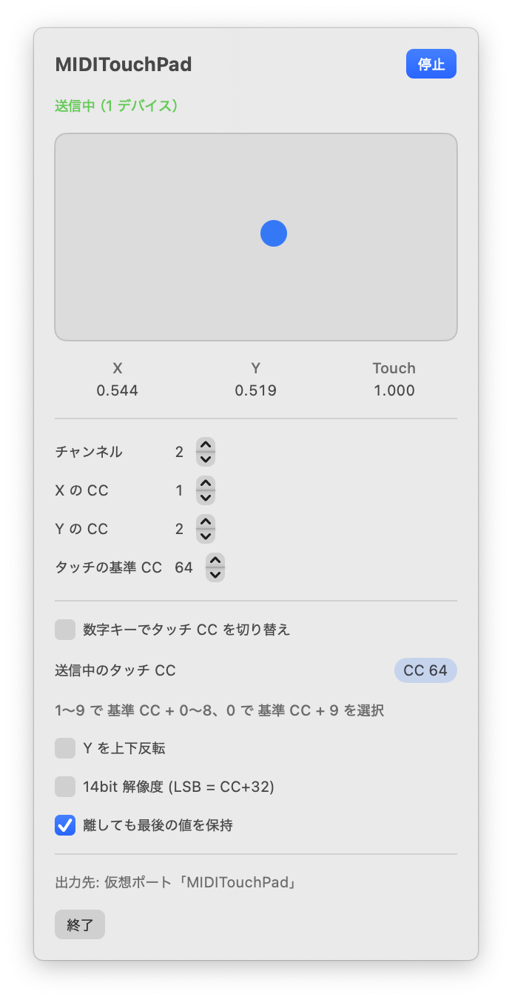

MIDITouchPad
トラックパッドが、MIDI コントローラーになる。
触れた位置を MIDI CC で送る、Mac のメニューバーのアプリ。
Turn your trackpad into a MIDI controller.
A Mac menu bar app that sends where you touch as MIDI CC.
ページの上での再現です。実際のアプリは、トラックパッドに触れた位置をこの値で送ります。
A simulation in your browser. The app sends these values from your actual trackpad.
触れた位置と、
触れているかどうか
Where you touch,
and whether you're touching
X・Y の位置と、指が触れているかどうかを、それぞれ CC で送ります。チャンネルや CC 番号はメニューから変えられます。
X, Y and touch each go out as a CC. Change the channel and CC numbers from the menu.
- Y の上下反転
- 14bit の細かい解像度（LSB = CC+32）
- 指を離しても最後の値を保持
- Invert Y
- Fine 14-bit resolution (LSB = CC+32)
- Hold the last value when you lift your finger
CC 1左 0 → 右 127left 0 → right 127CC 2手前 0 → 奥 127near 0 → far 127CC 64触れている間 127、離すと 0127 while touching, 0 when lifted設定いらずで、
すぐ届く
No setup.
It just shows up.
起動するとメニューバーに常駐して、すぐに送り始めます。自前の仮想 MIDI ポート「MIDITouchPad」から送るので、IAC ドライバの設定は要りません。DAW や VJ ソフトの MIDI 入力に、そのまま出てきます。
Launch it and it sits in the menu bar, sending right away from its own virtual MIDI port, “MIDITouchPad”. No IAC Driver setup — it appears as a MIDI input in your DAW or VJ software.
- 数字キー 1〜0 で、タッチの CC を 64〜73 に切り替え
- 指が触れたまま切り替えても、押しっぱなしの CC は残らない
- トラックパッドはそのままカーソル操作にも使える
- Number keys 1–0 switch the touch CC between 64 and 73
- Switching mid-touch never leaves a CC stuck on
- Your trackpad keeps moving the cursor as usual

指でなぞって、
音も映像も動かす
Draw with a finger,
move sound and visuals
MIDI を受け取れるアプリなら、何にでも使えます。DAW のフィルター、ソフトシンセのつまみ、VJ ソフトのエフェクトなどに、MIDI Learn で割り当てるだけです。
It works with any app that takes MIDI. Map it with MIDI Learn to a filter in your DAW, a knob on a soft synth, or an effect in your VJ software.
VJ アプリ ONOM FLOW でも、エフェクトのパラメータやオン・オフに割り当てられます。
In the VJ app ONOM FLOW, you can map it to effect parameters and toggles too.
動作環境
Requirements
- OS
- macOS 13 Ventura 以降
- Mac
- Apple シリコン搭載で、トラックパッドのある Mac
- 価格
- 無料
- 入手
- GitHub のリリース
- OS
- macOS 13 Ventura or later
- Mac
- A Mac with Apple silicon and a trackpad
- Price
- Free
- Get it
- GitHub Releases